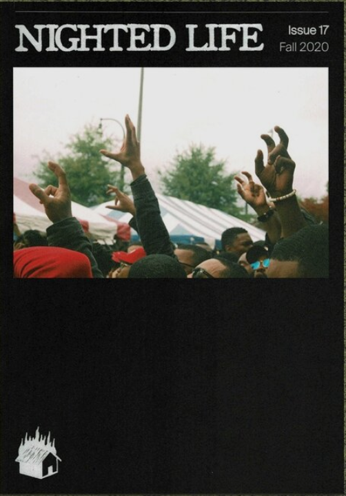
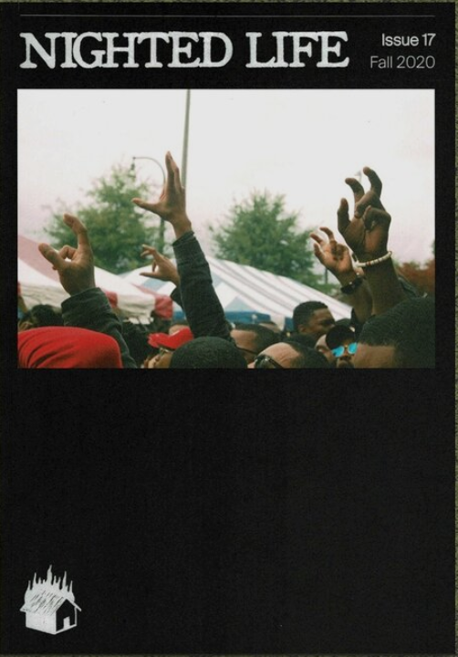

Where my work has appeared:


Photography is an interest of mine that did not take me as long to realize as computer science. Since I was a pre-teen I have been badgering friends and family to let me take photos of them. My interest later evolved to include visiting as many photography exhibits as humanly possible, collecting photobooks and vintage cameras and currently includes being an active participant in my favorite genre of street photography and member of female art collective, OGM and public candid photography club, SFCPC, in addition to working in customer service at Photoworks, a photo lab in San Francisco.
Where my work has appeared:
